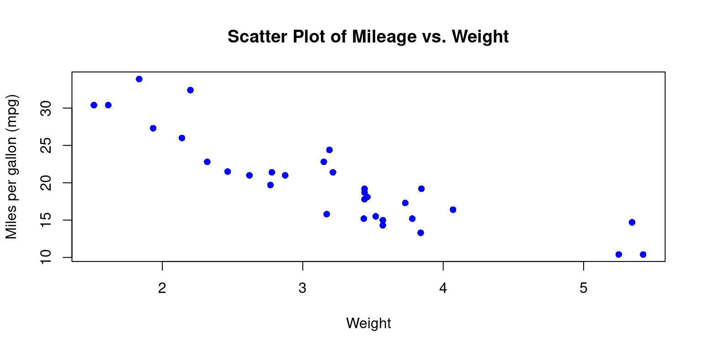
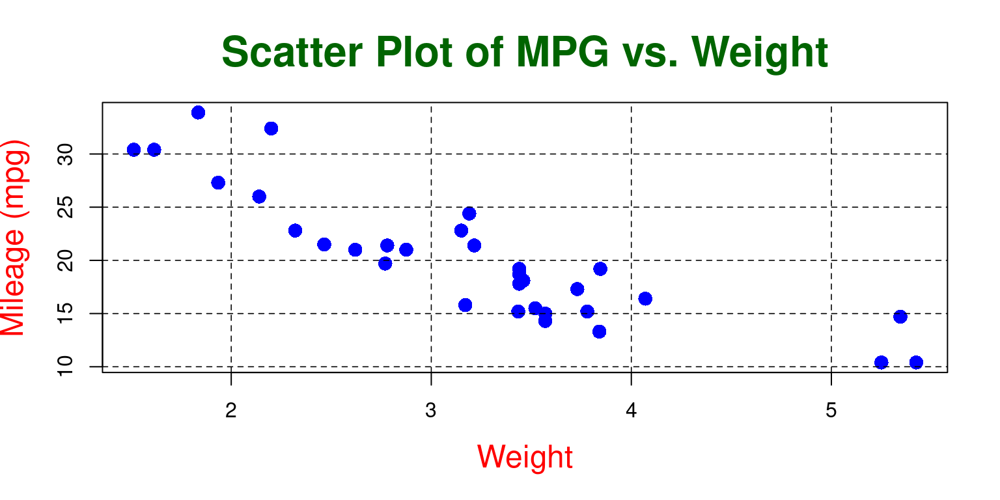
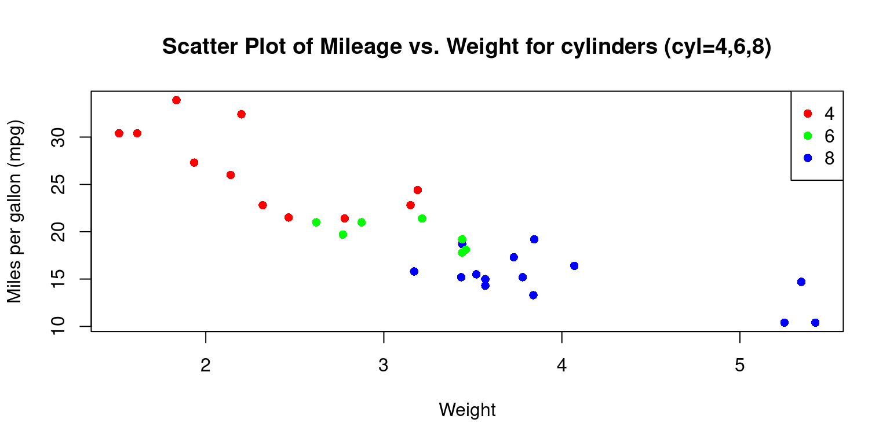
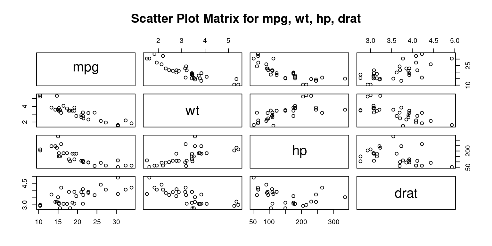
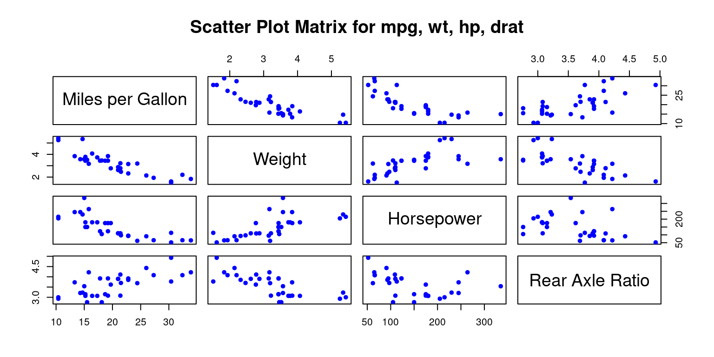
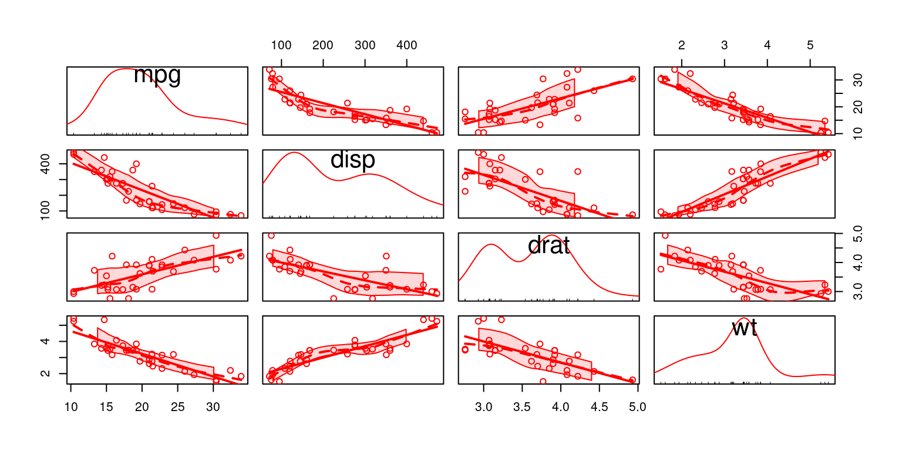
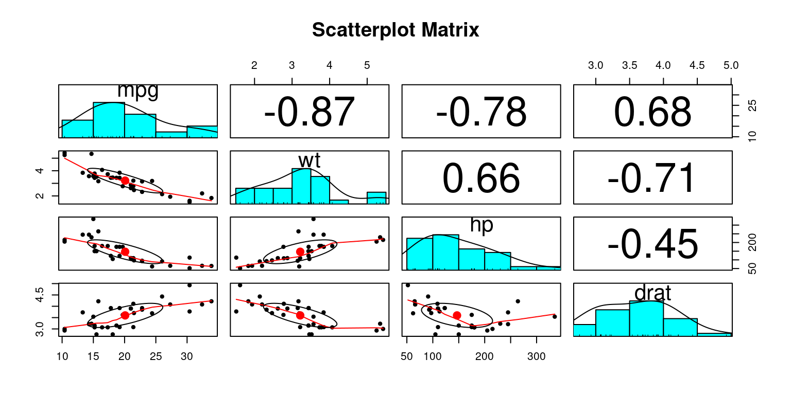

# Load the required libraries, suppressing annoying startup messages
library(tibble)
suppressPackageStartupMessages(library(dplyr))
# Read the mtcars dataset into a tibble called tb
data(mtcars)
tb <- as_tibble(mtcars)
# Convert relevant columns into factor variables
tb$cyl <- as.factor(tb$cyl) # cyl = {4,6,8}, number of cylinders
tb$am <- as.factor(tb$am) # am = {0,1}, 0:automatic, 1: manual transmission
tb$vs <- as.factor(tb$vs) # vs = {0,1}, v-shaped engine, 0:no, 1:yes
tb$gear <- as.factor(tb$gear) # gear = {3,4,5}, number of gears
# Directly access the data columns of tb, without tb$mpg
attach(tb)Continuous x Continous data (1 of 2)
Aug 7, 2023
Exploring bivariate Continuous x Continuous data
THIS CHAPTER explores how to summarize and visualize the interaction between bivariate continuous data using correlation analysis, scatter plots, scatter plot matrices and other such techniques.
Data: Suppose we run the following code to prepare the mtcars data for subsequent analysis and save it in a tibble called tb.
Scatterplots
A scatter plot is used to display the relationship between two continuous variables. It is a graphical representation of a bivariate distribution, where the values of two variables are plotted as points on a two-dimensional coordinate system.
A scatter plot can be used to identify trends, clusters, outliers, and other patterns in the data. It is also useful for detecting the presence of any outliers or influential observations that may affect the analysis. [1]
To create a scatter plot of
mpg(miles per gallon) againstwt(weight) in themtcarsdata set, we can use the following code:
Scatterplot using plot()
plot(tb$wt,
tb$mpg,
main = "Scatter Plot of Mileage vs. Weight",
xlab = "Weight", ylab = "Miles per gallon (mpg)",
pch = 16,
col="blue")
- Discussion:
This code will first load the mtcars data set, then create a scatter plot of
mpgagainstwtusing theplot()function.The
mainargument adds a title to the plot, thexlabandylabarguments add axis labelsThe
pchargument sets the shape of the points to a solid circle. pch = 15 gives a filled square. Recall other popular values: pch = 16 gives a filled circle, pch = 17 gives a filled triangle (pointing upwards), pch = 18 gives a filled diamond, pch = 19 gives a solid circle, pch = 20 gives a filled bullet (smaller than pch = 19)the
colargument specifies the color of the data points. Recall we can use any named color in R, or we can use hexadecimal color codes. For instance,col = "#FF0000"would give us red points. [2]
- Personalizing Scatter Plots
- We can personalize the appearance of the scatterplot in a variety of additional ways.
# Create the scatterplot
plot(tb$wt,
tb$mpg,
main = "Scatter Plot of MPG vs. Weight",
xlab = "Weight", ylab = "Mileage (mpg)",
pch = 16, cex = 1.5, col="blue",
col.lab="red", cex.lab=1.5,
col.main="darkgreen", cex.main=2,
bg = "gray")
# Add a grid
grid(col = "gray", lty = "dashed", lwd = 0.8)
- Discussion
Point Size: In the second plot, the size of the points is 1.5 times the default size (
cex = 1.5), while in the first plot, the size of the points is the default size ascexis not specified.Axis Labels’ Color and Size: The second plot has red-colored, larger size axis labels (
col.lab="red", cex.lab=1.5), while the first plot uses the default color and size as these parameters are not specified.Title’s Color and Size: The second plot has a dark green title that is twice the default size (
col.main="darkgreen", cex.main=2), while the first plot uses the default color and size for the title as these parameters are not specified.Background Color: The second plot has a light gray background (
bg = "lightgray"), while the first plot uses the default background color as the bg parameter is not specified.Grid: The second plot includes a grid with gray dotted lines (
grid(col = "gray", lty = "dotted", lwd = 0.5)), while the first plot does not have a grid as the grid() function is not called. [2]
- Scatterplot with best fit line
- We can add a line of best fit (a regression line) to your scatterplot using the
abline()andlm()functions.lm()is used to fit linear models, andabline()adds a straight line to the plot.
# Create the scatterplot
plot(tb$wt,
tb$mpg,
main = "Scatter Plot of Mileage vs. Weight",
xlab = "Weight", ylab = "Miles per gallon (mpg)",
pch = 16,
col="blue")
# Fit a linear model
fit <- lm(tb$mpg ~ tb$wt)
# Add a regression line
abline(fit, col = "red")
- Discussion:
lm(tb$mpg ~ tb$wt)fits a linear model predictingmpgfromwt. The~operator is a formula operator in R that separates the response variable (on the left of~) from the predictor variables (on the right of~).abline(fit, col = "red")subsequently adds the regression line to the plot, drawn in red color. [3]
- Visualizing Continuous x Continuous x Categorical data
- Consider the issue of visualizing two continuous variables
wt(Weight andmpg(Miles per gallon) for different levels of a categorical variablecyl(Cylinders).
# Create the scatterplot with points colored by cyl
plot(tb$wt,
tb$mpg,
main = "Scatter Plot of Mileage vs. Weight for cylinders (cyl=4,6,8)",
xlab = "Weight", ylab = "Miles per gallon (mpg)",
pch = 16,
col=c("red","green","blue")[tb$cyl]
)
# Add a legend
legend("topright",
legend = levels(tb$cyl),
col = c("red", "green", "blue"),
pch = 16)
- Discussion
In the snippet
col=c("red","green","blue")[tb$cyl], we assign the color of the data points according to thecylvariable. It translates to distinct colors for differentcylvalues in the plot.Moreover, when we incorporate the
legend()function with parameters such as"topright", we place a legend at the top-right corner of the plot. The identifiers and color scheme in the legend correspond to the unique values of thecylvariable. [2]
Scatterplot Matrix
A scatter plot matrix, also known as a pairs plot or SPLOM, is a powerful visual tool that helps us in depicting the pair-wise relationships among a group of variables. In this matrix, every distinct variable from the dataset is charted against each other in a grid-like structure. This enables us to delve into the associations between variable pairs and identify possible trends or patterns in the dataset.
When dealing with multivariate datasets, scatter plot matrices can be remarkably handy. They equip us with a rapid way to discern potential correlations among variable pairs – whether they are strong, weak, or non-existent. It’s also a convenient method to spot non-linear relationships between variables. In addition, it’s a beneficial tool to recognize outliers or peculiar data points and to observe clusters or collections of observations. [4]
Scatterplot Matrix using pairs()
- The following R code creates a scatter plot matrix, also known as a pairs plot, for four variables:
mpg(miles per gallon),wt(weight),hp(horsepower), anddrat(rear axle ratio). This is performed on the data stored in thetbdata frame.
# scatter plot matrix for mpg, wt, hp, drat
columns = c("mpg","wt","hp","drat")
pairs(tb[ ,columns],
main = "Scatter Plot Matrix for mpg, wt, hp, drat"
)
- Discussion:
The
pairs()function in R is designed to take a subset of the tb data frame consisting of the columns specified in the columns vector and construct a matrix of scatter plots.The plots are arranged in a grid format, where the variable for each row is plotted against the variable for each column. [5]
- Personalizing Scatterplot Matrix using
pairs()
# scatter plot matrix for mpg, wt, hp, drat
pairs(tb[,c("mpg","wt","hp","drat")],
main = "Scatter Plot Matrix for mpg, wt, hp, drat",
pch = 19,
labels = c("Miles per Gallon", "Weight", "Horsepower", "Rear Axle Ratio"),
col = c("blue"),
cex = 0.8
)
- Discussion:
Symbol: The
pchparameter is used to specify the symbol that represents data points in a plot.Labels: The
labelsparameter lets us customize the variable labels that appear on the diagonal:Color: We can specify different colors for the points in each scatter plot with the
colparameter.Point Size: The
cexparameter controls the size of the points in the scatter plot.
Scatter Plot Matrix using scatterplotMatrix() from package car
- The following code creates an alternate scatterplot matrix for each pair of the variables
mpg,disp,drat, andwt, allowing us to explore the relationships among these four variables.
# Load the car package
library(car)
# Create a scatterplot matrix using scatterplotMatrix()
scatterplotMatrix(data = tb,
~ mpg + disp +drat +wt,
col = c("red")) 
- Discussion:
The
carpackage, short for Companion to Applied Regression, contains numerous functions and datasets that are helpful for regression analysis.The next step is creating a scatterplot matrix. For this, we use the
scatterplotMatrix()function from thecarpackage. This function creates a scatter plot matrix, which is a grid of scatter plots that shows pairwise relationships between several variables.Here, the
dataargument specifies the data frame we are working with,tb.The formula
~ mpg + disp + drat + wtindicates the variables to be included in the scatter plot matrix. Recallmpg,disp,drat, andwtrepresent miles per gallon, displacement, rear axle ratio, and weight, respectively.The
colargument is used to set the color of the points in the scatter plots. Here, all points are colored red. [6]
Scatter Plot Matrix using pairs.panels() in package psych
# Load the psych package
library(psych)
# Create a scatterplot matrix using pairs.panels()
pairs.panels(tb[,c("mpg","wt","hp","drat")],
main = "Scatterplot Matrix")
Discussion:
The
psychpackage contains a variety of functions useful for psychological, psychometric, and personality research.We utilize the
pairs.panels()function from thepsychpackage to create a scatterplot matrix. This function is very helpful as it produces a matrix of bivariate scatter plots on the lower panels, histograms or kernel density plots on the diagonals, and correlations on the upper panels.The
tb[,c("mpg","wt","hp","drat")]in the code specifies the subset of thetbdata frame that we want to include in the scatterplot matrix. In this case, it refers to the columnsmpg(miles per gallon),wt(weight),hp(horsepower), anddrat(rear axle ratio).The
mainparameter sets the main title for the plot, which in this instance is “Scatterplot Matrix”. [7]
Summary of Chapter
References
[1]
Everitt, B. S., & Hothorn, T. (2014). A Handbook of Statistical Analyses Using R. Chapman and Hall/CRC. (
[2]
R Core Team. (2023). R: A language and environment for statistical computing. R Foundation for Statistical Computing. https://www.R-project.org/
[3]
Fox, J., & Weisberg, S. (2019). An R Companion to Applied Regression (3rd ed.). Sage.
[4]
Everitt, B., & Hothorn, T. (2011). An introduction to applied multivariate analysis with R. Springer.
[5] Chick, J. (2020). Data visualisation with R: 100 Examples. CRC Press.
[6] Fox, J., & Weisberg, S. (2019). An R Companion to Applied Regression (3rd ed.). SAGE Publications.
Revelle, W. (2020). Procedures for Psychological, Psychometric, and Personality Research. Northwestern University.
[7] Revelle, W. (2020). Procedures for personality and psychological research. Northwestern University, Evanston. Retrieved from https://CRAN.R-project.org/package=psych.